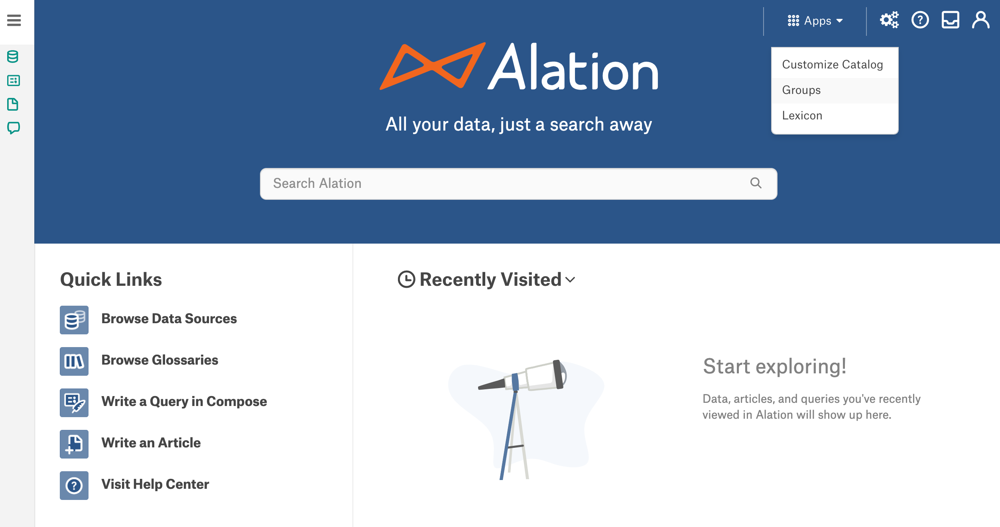
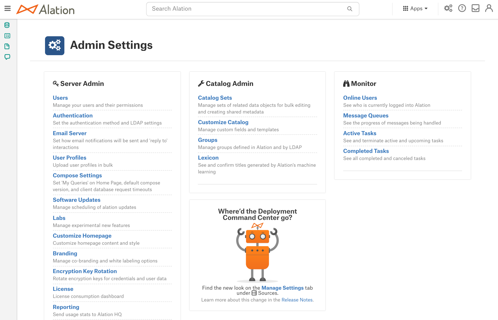
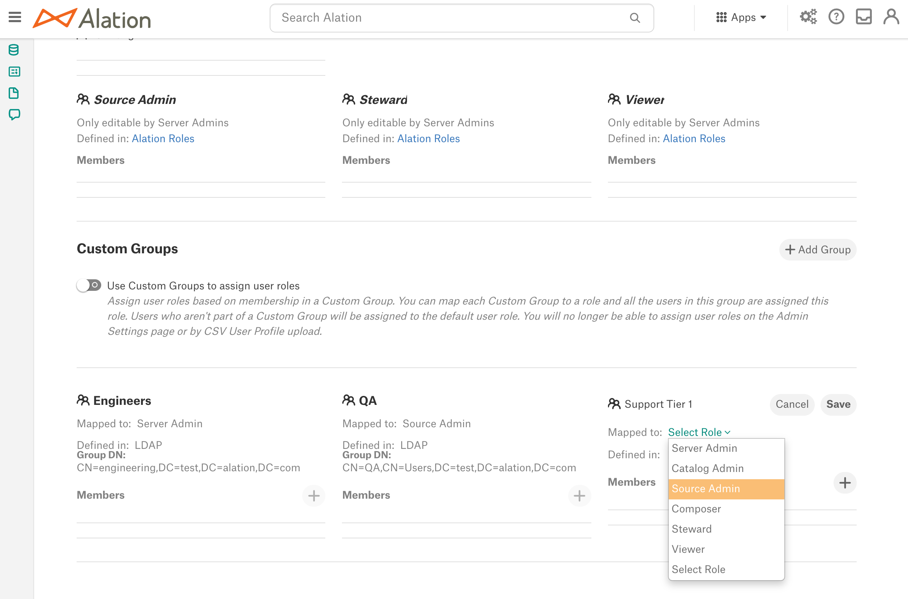

Manage Groups¶
Alation Cloud Service Applies to Alation Cloud Service instances of Alation
Customer Managed Applies to customer-managed instances of Alation
A group is a set of members who perform similar tasks in Alation or belong to the same department in an organization.
Alation has 2 types of groups:
Groups can be managed by users with the Server Admin or Catalog Admin roles.
To access the Admin Settings > Groups page:
If you are a Catalog Admin, click the Settings menu on top right and then click Groups:
If you are a Server Admin, go to the Admin Settings page and click Groups in the Catalog Admin section:

Built-In Groups¶
Built-in groups are available by default and cannot be removed. They directly correspond to the Alation roles:
In releases up to V R6 (5.10.x): the built-in groups are Server Admins and Catalog Admins.
Starting with V R7 (5.12.x), there are 6 built-in groups: Server Admins, Catalog Admins, Source Admins, Composers, Stewards, Viewers.
Each built-in group includes users with the respective Alation role as members. When the role of a user is changed, it is reflected in their membership in a built-in group: the user is automatically placed into the built-in group that corresponds to their new role.
Both Server Admins and Catalog Admins can view built-in groups.
From release V R7 (5.12.x), the built-in groups cannot be edited. They are updated automatically when Alation users are assigned roles.
Custom Groups¶
Custom groups are either created by Server or Catalog Admins or created automatically as the result of SCIM sync.
Note
SCIM groups are available from version 2021.3
Groups that are Defined in Alation or Defined in LDAP can be created manually by admins:
Custom group is defined in Alation: when a custom group is defined in Alation, group members can be added manually from user accounts that exist in Alation.
Custom group is defined in LDAP: when a custom group is defined in LDAP, it is configured to use the DN of the corresponding group in the LDAP directory of the organization to sync the group members between Alation and the LDAP directory. LDAP groups should be configured when Alation uses the LDAP authentication method and users and groups in Alation and in the LDAP directory need to be in sync.
Groups that are Defined in SCIM are created automatically when SCIM integration is enabled on the Alation instance and Groups are pushed from the IdP over SCIM. SCIM integration requires that the authentication method in Alation should be SAML. Also see SCIM Groups.
Create Custom Groups Defined in Alation¶
Log in to Alation as a Server or Catalog Admin and go to the Groups page in Settings.
On the Groups page, scroll down to the Custom Groups section.
Click the Add Group link on the right. A new untitled group in the Edit mode will appear under Custom Groups.
Click on the Group Name field and type a name.
By default, the Defined in field is set to Alation. Leave the default value.
Release 2021.1 and later: map an Alation role onto the group using the Mapped to list. Mapping a role onto the custom group is optional if you are using the default method of role assignment. However, it is required if you are going to enable role assignment using custom groups. This action is available to Server Admins only, and will appear as disabled to a Catalog Admin.
Note
For details on role assignment using custom groups, see Use Custom Groups to Assign User Roles.
Click Save. The custom group is created. After the group information has been saved, you can add group members.
Add Members to a Custom Group¶
In the Custom Group section of the Groups page, select the group defined in Alation to which you want to add members.
Click the Plus icon next to Members. The Search Users dialog will open.
Enter the first few characters of the username and click the search icon. Then click the appropriate user to add them as a member of the group.
{kind=link}
Remove Members from a Custom Group¶
In the Custom Group section of the Groups page, select the group defined in Alation from which you want to remove a member.
Mouse over the name of the user to reveal the Delete icon to the right of the name.
Click the Delete icon to remove the member from the group.
{kind=link}
Create Custom Groups Defined in LDAP¶
For information on creating LDAP-defined Custom Groups in Alation, see Configure LDAP Groups.
Edit a Custom Group¶
To edit a Custom Group, click the Edit icon next to the Group name.
Update the information of the Custom Group.
Click Save. The information of the Custom Group gets updated and saved.
{kind=link}
Map Groups Onto Roles¶
Applies from release 2021.1
The group-role mapping is optional for the default method of role assignment. By default, Server Admins assign roles on a per-user basis on the Admin Settings > Users page.
The group-role mapping is required when the Use Custom Groups to assign user roles is enabled: Use Custom Groups to Assign User Roles.
To map the group onto a role:
When editing a custom group, use the Mapped to list to map this group onto an Alation role:
Save the changes to the group.
If there are already members in this group and the Use Custom Groups to assign user roles setting is already enabled, then Alation will update the role assignments of the group members. Refresh the page to see the changes in role assignment reflected in the built-in groups.
Delete a Custom Group¶
To delete a Custom Group, click the Delete icon adjacent to the Group name.
Confirm the deletion of the group.